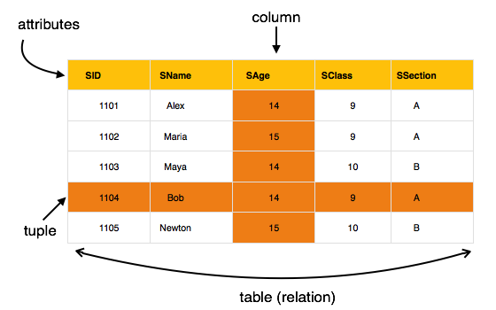

Module 1
Last Updated : 24 Oct 2020
HISTORY of DBMS
Data is a collection of facts and figures. The data collection was increasing day to day and they needed to be
stored in a device or a software which is safer.
...
Charles Bachman was the first person to develop the Integrated Data Store (IDS) which was based on network
data model for which he was inaugurated with the Turing Award (The most prestigious award which is equivalent
to Nobel prize in the field of Computer Science.). It was developed in early 1960’s.
In the late 1960’s, IBM (International Business Machines Corporation) developed the Integrated Management
Systems which is the standard database system used till date in many places. It was developed based on the
hierarchical database model. It was during the year 1970 that the relational database model was developed by
Edgar Codd. Many of the database models we use today are relational based. It was considered the standardized
database model from then.
The relational model was still in use by many people in the market.Later during the same decade (1980’s), IBM
developed the Structured Query Language (SQL) as a part of R project. It was declared as a standard language
for the queries by ISO and ANSI. The Transaction Management Systems for processing transactions was also
developed by James Gray for which he was felicitated the Turing Award.
Further, there were many other models with rich features like complex queries, datatypes to insert images and
many others. The Internet Age has perhaps influenced the data models much more. Data models were developed
using object oriented programming features, embedding with scripting languages like Hyper Text Markup Language
(HTML) for queries. With humongous data being available online, DBMS is gaining more significance day by day.
Database is a collection of related data and data is a collection of facts and figures that can be
processed
to produce information.
Mostly data represents recordable facts. Data aids in producing information, which is based on facts. For
example, if we have data about marks obtained by all students, we can then conclude about toppers and average
marks.
A Database Management system stores data in such a way that it becomes easier to retrieve, manipulate,
and
produce information.
CHARACTERISTICS
Traditionally, data was organized in file formats. DBMS was a new concept then, and all the research was done
to make it overcome the deficiencies in traditional style of data management. A modern DBMS has the following
characteristics
1. Real-world entity
A modern DBMS is more realistic and uses real-world entities to design its
architecture.
It uses the behavior and attributes too. For example, a school database may use students as an entity and
their age as an attribute.
2. Relation-based tables
DBMS allows entities and relations among them to form tables. A user can
understand
the architecture of a database just by looking at the table names.
3.Isolation of data and application
A database system is entirely different than its data. A
database is an
active entity, whereas data is said to be passive, on which the database works and organizes. DBMS also stores
metadata, which is data about data, to ease its own process.
4.Less redundancy
DBMS follows the rules of normalization, which splits a relation when any of its
attributes
is having redundancy in values. Normalization is a mathematically rich and scientific process that reduces
data redundancy.
5.Consistency
Consistency is a state where every relation in a database remains consistent. There
exist
methods and techniques, which can detect attempt of leaving database in inconsistent state. A DBMS can provide
greater consistency as compared to earlier forms of data storing applications like file-processing
systems.
6.Query Language
DBMS is equipped with query language, which makes it more efficient to retrieve
and
manipulate data. A user can apply as many and as different filtering options as required to retrieve a set of
data. Traditionally it was not possible where file-processing system was used.
7.ACID Properties
DBMS follows the concepts of Atomicity, Consistency, Isolation, and Durability
(normally
shortened as ACID). These concepts are applied on transactions, which manipulate data in a database. ACID
properties help the database stay healthy in multi-transactional environments and in case of failure.
8.Multiuser and Concurrent Access
DBMS supports multi-user environment and allows them to access
and
manipulate data in parallel. Though there are restrictions on transactions when users attempt to handle the
same data item, but users are always unaware of them.
9.Multiple views
DBMS offers multiple views for different users. A user who is in the Sales
department will
have a different view of database than a person working in the Production department. This feature enables the
users to have a concentrate view of the database according to their requirements.
10.Security
Features like multiple views offer security to some extent where users are unable to
access data of
other users and departments. DBMS offers methods to impose constraints while entering data into the database
and retrieving the same at a later stage. DBMS offers many different levels of security features, which
enables multiple users to have different views with different features. For example, a user in the Sales
department cannot see the data that belongs to the Purchase department. Additionally, it can also be managed
how much data of the Sales department should be displayed to the user. Since a DBMS is not saved on the disk
as traditional file systems, it is very hard for miscreants to break the code.
USERS
A typical DBMS has users with different rights and permissions who use it for different purposes. Some users
retrieve data and some back it up. The users of a DBMS can be broadly categorized as follows
1.Administrators
Administrators maintain the DBMS and are responsible for administrating the
database. They
are responsible to look after its usage and by whom it should be used. They create access profiles for users
and apply limitations to maintain isolation and force security. Administrators also look after DBMS resources
like system license, required tools, and other software and hardware related maintenance.
2.Designers
Designers are the group of people who actually work on the designing part of the
database. They
keep a close watch on what data should be kept and in what format. They identify and design the whole set of
entities, relations, constraints, and views.
3.End Users
End users are those who actually reap the benefits of having a DBMS. End users can
range from
simple viewers who pay attention to the logs or market rates to sophisticated users such as business
analysts.
ARCHITECTURE
The design of a DBMS depends on its architecture. It can be centralized or decentralized or hierarchical. The
architecture of a DBMS can be seen as either single tier or multi-tier. An n-tier architecture divides the
whole system into related but independent n modules, which can be independently modified, altered, changed, or
replaced.
In 1-tier architecture, the DBMS is the only entity where the user directly sits on the DBMS and uses it. Any
changes done here will directly be done on the DBMS itself. It does not provide handy tools for end-users.
Database designers and programmers normally prefer to use single-tier architecture.
If the architecture of DBMS is 2-tier, then it must have an application through which the DBMS can be
accessed. Programmers use 2-tier architecture where they access the DBMS by means of an application. Here the
application tier is entirely independent of the database in terms of operation, design, and
programming.
3 TIER ARCHITECTURE
A 3-tier architecture separates its tiers from each other based on the complexity of the users and how they
use the data present in the database. It is the most widely used architecture to design a DBMS.
1.Database (Data) Tier
At this tier, the database resides along with its query processing
languages. We also
have the relations that define the data and their constraints at this level.
2.Application (Middle) Tier
At this tier reside the application server and the programs that
access the
database. For a user, this application tier presents an abstracted view of the database. End-users are unaware
of any existence of the database beyond the application. At the other end, the database tier is not aware of
any other user beyond the application tier. Hence, the application layer sits in the middle and acts as a
mediator between the end-user and the database.
3.User (Presentation) Tier
End-users operate on this tier and they know nothing about any
existence of the
database beyond this layer. At this layer, multiple views of the database can be provided by the application.
All views are generated by applications that reside in the application tier.
Multiple-tier database architecture is highly modifiable, as almost all its components are independent and can
be changed independently.
DATA MODELS
Data models define how the logical structure of a database is modeled. Data Models are fundamental entities to
introduce abstraction in a DBMS. Data models define how data is connected to each other and how they are
processed and stored inside the system.
The very first data model could be flat data-models, where all the data used are to be kept in the same plane.
Earlier data models were not so scientific, hence they were prone to introduce lots of duplication and update
anomalies
Entity-Relationship Model
Entity-Relationship (ER) Model is based on the notion of real-world entities and relationships among them.
While formulating real-world scenario into the database model, the ER Model creates entity set, relationship
set, general attributes and constraints.
ER Model is best used for the conceptual design of a database.
ER Model is based on
1.Entities and their attributes.
2.Relationships among entities.

1.Entity
An entity in an ER Model is a real-world entity having properties called attributes.
Every attribute
is defined by its set of values called domain. For example, in a school database, a student is considered as
an entity. Student has various attributes like name, age, class, etc.
2.Relationship
The logical association among entities is called relationship. Relationships are
mapped with
entities in various ways. Mapping cardinalities define the number of association between two entities.
Mapping cardinalities
1.one to one
2.one to many
3.many to one
4.many to many
Relational Model
The most popular data model in DBMS is the Relational Model. It is more scientific a model than others. This
model is based on first-order predicate logic and defines a table as an n-ary relation.

The main highlights of this model are
Data is stored in tables called relations.
Relations can be normalized.
In normalized relations, values saved are atomic values.
Each row in a relation contains a unique value.
Each column in a relation contains values from a same domain.
Geeksforgeks..
Tutorialspoint..